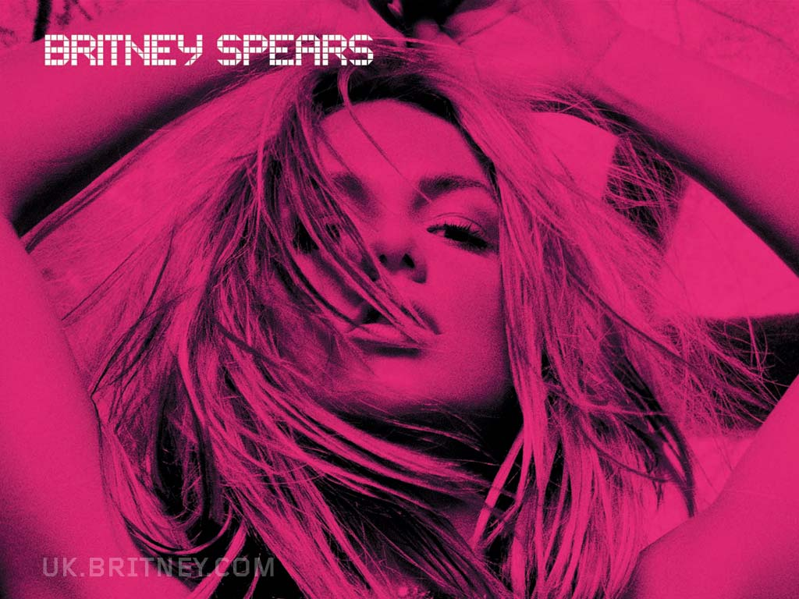

Home
Premios ganados con su primer lanzamiento
- Premios AOL
- Mejor Artista Nuevo
- Premios Billboard
- Artista del Año
- Artista Femenina del Año
- Álbum del Artista del Año
- Mejor Artista Nuevo
- Premios Bravo Gold
- Mejor Vocalista Femenina Internacional
Estadio Unico de la Plata, lugar en donde actuo BRITNEY la unica vez que estuvo en argentina!!